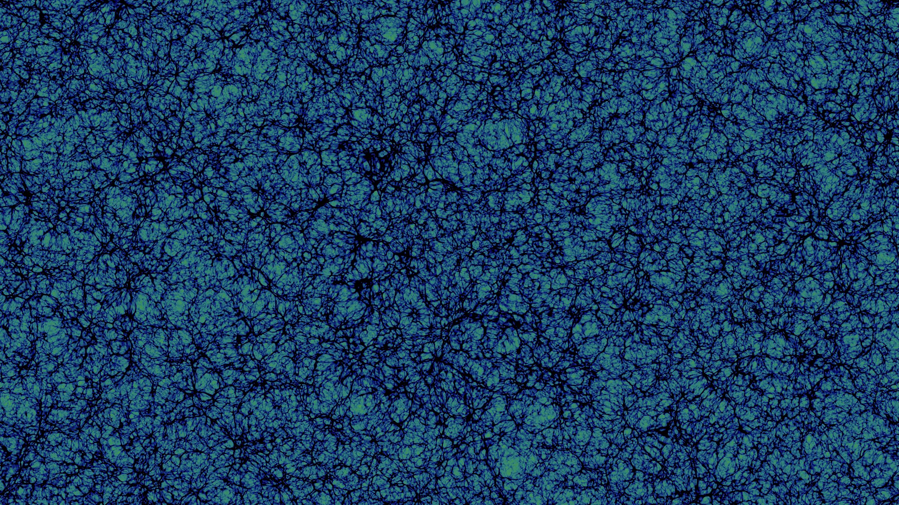
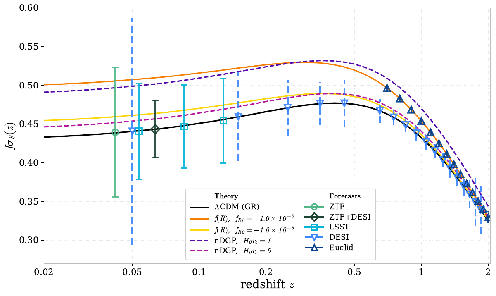
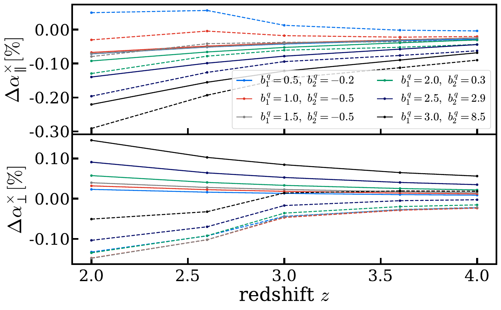
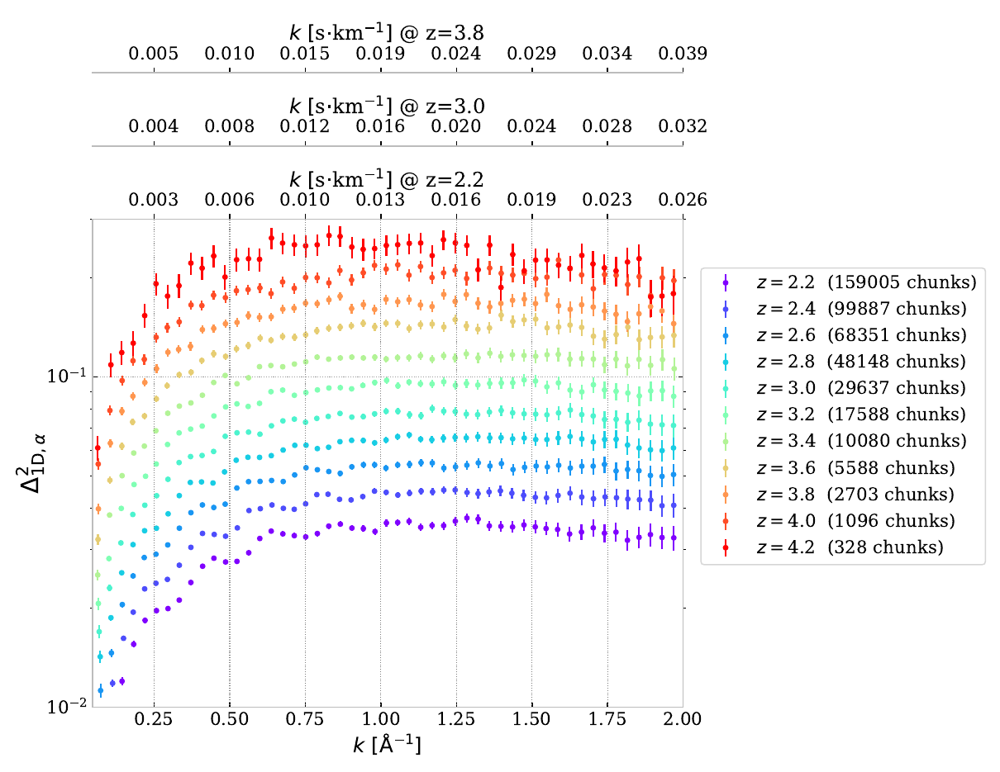
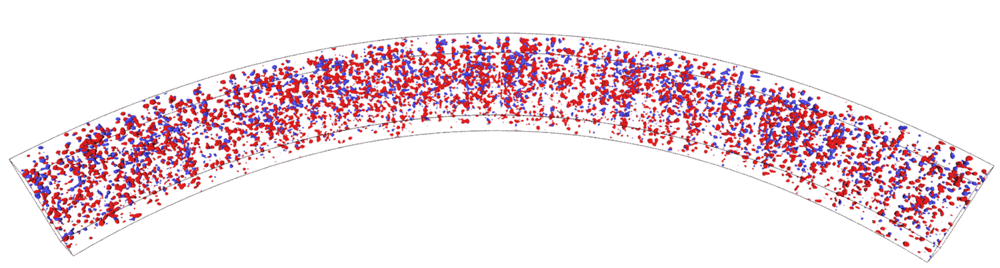
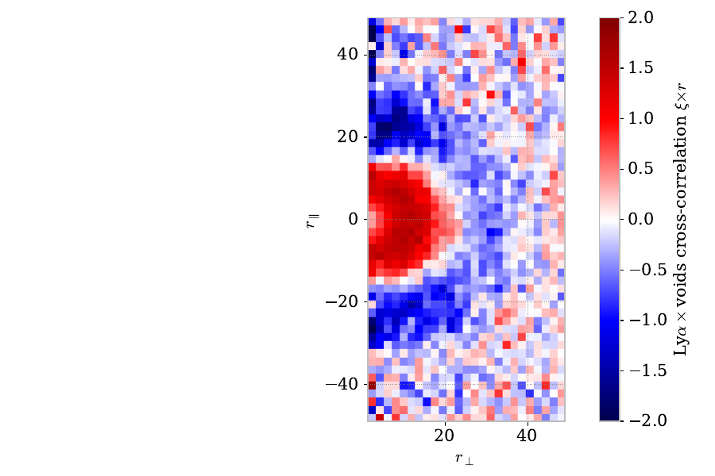

Corentin
Ravoux
I measure how cosmic structure grows and how fast the Universe expands in every direction — from supernova velocities next door to the Lyman-α forest ten billion years back.
I am a CNRS researcher at the Laboratoire de Physique de Clermont-Auvergne, working on the large-scale structure of the Universe with spectroscopic and photometric surveys.
I did my PhD on the Lyman-α forest, a postdoc at CPPM in Marseille on peculiar velocities, and joined the CNRS in November 2023. My work sits at two ends of the same axis: the local Universe, where supernova velocities measure how structure grows today, and the high-redshift intergalactic medium, where the Lyman-α forest measures the matter power spectrum on the smallest scales cosmology can reach.
I co-supervise PhD students and interns, lead the peculiar-velocity working group of LSST-DESC, and write the analysis software my measurements run on.
Growth of structure from peculiar velocities
Galaxies fall towards mass. Measure that infall and you measure the growth rate fσ₈ — a direct test of gravity on cosmological scales, independent of the expansion history.
Type Ia supernovae are the sharpest distance indicators we have at low redshift, so the residuals of their Hubble diagram carry the velocity field. I built a generalised field-level likelihood framework for this measurement, released as flip, and used it to show that combining ZTF supernova velocities with the DESI bright galaxy density field improves the constraint on fσ₈ by 50% over velocities alone.
The same machinery drives forecasts for Rubin-LSST, where the supernova sample grows by two orders of magnitude and systematics — photometric typing, host redshifts, intrinsic scatter — take over from statistics.

Anisotropy and cosmic dipoles
The cosmological principle is an assumption, not a measurement. Supernovae can test it directly.
The same Hubble-diagram residuals that give the velocity field also let you fit the expansion rate direction by direction. The difficulty is that a coherent bulk flow mimics an H₀ dipole almost perfectly, so the signal of one analysis is the contaminant of the other. With ZTF simulations carrying both an injected dipole and a realistic velocity field, we can quantify where the two separate — and where they cannot.
A parallel test uses source counts rather than distances: our motion should imprint a known dipole on the number of quasars across the sky. It does not, at least not with the expected amplitude, and that discrepancy is one of the sharper anomalies in cosmology today. Rubin-LSST will provide the number counts to settle it.
Baryon acoustic oscillations with DESI
The sound horizon left a fixed length scale imprinted in the matter distribution. Measuring it at many redshifts, with galaxies and with the Lyman-α forest, turns it into a ruler for the expansion history.
Inside DESI I work on the Lyman-α side of that measurement: the catalogues and the continuum-fitting pipeline the forest correlations are built from, and the validation that keeps the peak position unbiased. That work runs through the DR1 and DR2 BAO analyses, and into the galaxy and quasar measurements that anchor the low-redshift end of the ruler.
The question I lead on is how much astrophysics moves the peak. With the ACCEL² simulations we measured the shift of the BAO position in the Lyman-α auto-correlation and its cross-correlation with quasars, as a function of quasar bias and redshift, and found it stays below a few tenths of a per cent — small compared with the statistical precision DESI will reach, which is what makes the forest a trustworthy ruler at z ≈ 2.3.

The Lyman-α forest
Every distant quasar is a backlight. The absorption lines along the way map the neutral hydrogen between us and it, at scales no galaxy survey can reach.
I measure the one-dimensional Lyman-α power spectrum with DESI, using a Fast Fourier Transform estimator I lead within the collaboration. P1D constrains the small-scale matter power spectrum, and through it the mass of neutrinos, warm dark matter and the thermal history of the intergalactic medium.
The measurement is only as good as the simulations behind it: with the ACCEL² project we produced large-volume hydrodynamical runs to calibrate the effective-field-theory parameters of the forest, and the first clear detection of the BAO peak in a hydrodynamic simulation.

Tomographic maps, and the voids inside them
Enough quasar sightlines close enough together stop being a catalogue and become a map. The forest turns into a three-dimensional picture of the intergalactic medium.
Using the dense quasar sample of eBOSS Stripe 82, I reconstructed the flux-contrast field between the sightlines with a Wiener filter, producing one of the first large tomographic maps of the high-redshift matter distribution. The pipeline is open, as lelantos.
A map lets you ask questions a power spectrum cannot: where are the underdense regions? We detected voids directly in the reconstructed field and measured their cross-correlation with the forest — the first such measurement — recovering the void profile and its redshift-space distortion, and confirming the voids trace real underdensities rather than gaps in the sightline coverage.


Code I build and maintain
Every measurement above ships as a package. They are open, documented and used by the DESI, ZTF and LSST-DESC collaborations.
Field-level likelihood inference of the growth rate from velocity and density fields. Analytic wide-angle covariances, JAX acceleration, Fisher forecasts.
peculiar velocities lelantosLyman-α tomography: flux contrast to 3D Wiener-filtered maps of the intergalactic medium, and the voids inside them.
tomography p1desiOne-dimensional power spectrum analysis of the DESI Lyman-α forest, from picca outputs to cosmological constraints.
DESI Lyα lyapowerFitting 3D Lyman-α power spectra from Nyx hydrodynamical simulations, with splicing across resolutions.
simulations growth_reviewCompiled fσ₈, BAO and S₈ constraints with the plotting layer behind the review figures, plus an EFTCAMB modified-gravity backend.
compilation lyavoidCross-correlation of the Lyman-α forest with voids detected in tomographic maps.
voidsRecent papers
Marked ● where I led or co-led the analysis. The full list is generated from INSPIRE-HEP.
- 2026 Lyman Break Galaxy selection and redshift measurement with supervised contrastive learning
- 2026 Validation of the DESI DR2 Lyα forest full-shape analysis
- 2026 Cosmic Pairs: A DESI Census of Dual and Offset AGN as Precursors to Massive Black Hole Binaries
- 2026 CoLoRe-2LPT: Lyman-α mock catalogues for the validation of DESI cosmological analyses
- 2026 DESI DR2 Results IV: Alcock-Paczyński Measurements from the Lyman Alpha Forest and Cosmological Constraints
- 2026 Lyman-α forest holography: 3D predictions from 1D measurements